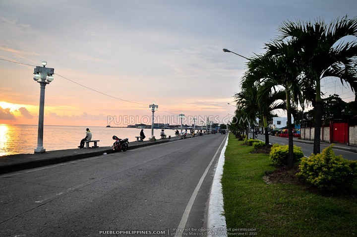

About Zamboanga City
Zamboanga City, situated on the western tip of the Mindanao island in the Philippines, stands as a vibrant cultural and economic hub in the region. Renowned for its rich history, diverse culture, and breathtaking natural landscapes, Zamboanga City captivates visitors with its unique blend of influences from Spanish, Filipino, and Muslim traditions.
Explore Zamboanga City
Explore Zamboanga City for its captivating blend of cultural diversity, historical significance, and scenic beauty. From the iconic Fort Pilar to the stunning pink sand beaches of Santa Cruz Island, the city offers a wealth of historical landmarks, breathtaking natural landscapes, and vibrant cultural experiences. Indulge in the culinary delights influenced by Spanish, Filipino, and Muslim traditions, and immerse yourself in the festive spirit of celebrations like the Hermosa Festival. With warm hospitality and friendly locals eager to share their stories, Zamboanga City promises an enriching journey filled with authentic experiences and unforgettable memories.
-
What’s the best time to visit Zamboanga City?
Is Zamboanga City safe for tourists?
-
Peakview Café
-
Fort Pilar Shrine
Paseo Del Mar
Grande Santa Cruz Island
Merloquet Falls
Pasonanca Park
Yakan weaving village
Taluksangay Mosque
R.T. Lim Boulevard

Sadik Grand Mosque
Visit during the dry season, from January to March, for the best weather. However, if you’re keen on festivals, October’s Hermosa Festival is a spectacle not to be missed.
Like any urban area, it’s wise to stay alert. But don’t let fear hold you back. The city has taken great strides in ensuring safety for visitors, and the locals are known for their warm hospitality.
Here are the top 10 Tourist spot in the Zamboanga City

Situated atop a picturesque hill in Zamboanga City, Peakview Cafe offers more than just delightful cuisine—it provides an unforgettable dining experience with its stunning panoramic views.
This is located at located at Km.10 Sta. Rita, La Paz Zambo Ecozone Highlands.

The Real Fuerte de Nuestra Señora del Pilar de Zaragoza, also Fort Pilar, is a 17th-century military defense fortress built by the Spanish colonial government in Zamboanga City. The fort, which is now a regional museum of the National Museum of the Philippines, is a major landmark of the city and it symbolize the cultural heritage. Outside the eastern wall is a Marian shrine dedicated to Our Lady of the Pillar, the patroness of the city, pontifically crowned on 12 October 1960 via decree dating from 18 September 1960.
This is located at Valderosa St. Sta Barbara, Zamboanga City 7000.

Paseo Del Mar is located very close to the historical landmark and National Museum known as Fort Pilar. Paseo Del Mar is also known for its several restaurants, cafés and entertainment as well.
This is located at right beside Fort Pilar, N S Valderosa St, Zamboanga City.

Great Santa Cruz Island is a small inhabited island in Zamboanga City in the southern region of the Philippines that is famous for its pink coralline sand.
The island, located 4 kilometres south of downtown at the Santa Cruz Bank in the Basilan Strait, boasts one of the pink sand beaches in the Philippines

It is a two-tiered drop but its main attraction is the beautiful curtain waterfalls on its base, approximately 10-meter high and 15-meter wide stair-like wall to a shallow pool, definitely one-of-a-kind in the Philippines. The upper tier is a shorter drop and sloped diagonally, approximately 5-meter high and 10-meter wide.
This is located at Brgy. Sibulao, Zamboanga Sibugay.

The park consists of floral and butterfly species such as orchids, roses and colorful butterflies surrounding the garden. It also has an aviary park for the avian species such as parrots, turkeys, and eagles among the birds.
You can find it at Brgy. Pasonanca, Zamboanga City

The Yakans are the first inhabitants of the Basilan province and are considered to be one of the finest weavers in the Philippines. According to one of the Yakans I’ve met, they use the “huli” and “sulip” type of thread for their weaving.
It is located at Upper Calarian, Labuan - Limpapa National Road, Zamboanga City

The Taluksangay Mosque was built by Hadji Abdullah Maas Nuno in 1885 in the Barangay Taluksangay, Zamboanga, the Philippines. It is the oldest mosque in Western Mindanao. Taluksangay was the first center of Islamic propagation in the Zamboanga Peninsula.
This mosque can be found at Brgy. Taluksangay, Zamboanga City
CAWA-CAWA BOULEVARD is also known as R.T. LIM BOULEVARD and another recreational place by the sea where folks could jog or run in the early morning, or just hang out at anytime while viewing Sta. Cruz Island or the port or the fishing boats and the famed sunset.
This is Adjacent barangays are: Canelar, Sto. Niño, Baliwasan and Zone I-City Proper

Situated atop a picturesque hill in Zamboanga City, Peakview Cafe offers more than just delightful cuisine—it provides an unforgettable dining experience with its stunning panoramic views.
This is located at located at Km.10 Sta. Rita, La Paz Zambo Ecozone Highlands.
The Real Fuerte de Nuestra Señora del Pilar de Zaragoza, also Fort Pilar, is a 17th-century military defense fortress built by the Spanish colonial government in Zamboanga City. The fort, which is now a regional museum of the National Museum of the Philippines, is a major landmark of the city and it symbolize the cultural heritage. Outside the eastern wall is a Marian shrine dedicated to Our Lady of the Pillar, the patroness of the city, pontifically crowned on 12 October 1960 via decree dating from 18 September 1960.
This is located at Valderosa St. Sta Barbara, Zamboanga City 7000.
Paseo Del Mar is located very close to the historical landmark and National Museum known as Fort Pilar. Paseo Del Mar is also known for its several restaurants, cafés and entertainment as well.
This is located at right beside Fort Pilar, N S Valderosa St, Zamboanga City.
Great Santa Cruz Island is a small inhabited island in Zamboanga City in the southern region of the Philippines that is famous for its pink coralline sand.
The island, located 4 kilometres south of downtown at the Santa Cruz Bank in the Basilan Strait, boasts one of the pink sand beaches in the Philippines
It is a two-tiered drop but its main attraction is the beautiful curtain waterfalls on its base, approximately 10-meter high and 15-meter wide stair-like wall to a shallow pool, definitely one-of-a-kind in the Philippines. The upper tier is a shorter drop and sloped diagonally, approximately 5-meter high and 10-meter wide.
This is located at Brgy. Sibulao, Zamboanga Sibugay.
The park consists of floral and butterfly species such as orchids, roses and colorful butterflies surrounding the garden. It also has an aviary park for the avian species such as parrots, turkeys, and eagles among the birds.
You can find it at Brgy. Pasonanca, Zamboanga City
The Yakans are the first inhabitants of the Basilan province and are considered to be one of the finest weavers in the Philippines. According to one of the Yakans I’ve met, they use the “huli” and “sulip” type of thread for their weaving.
It is located at Upper Calarian, Labuan - Limpapa National Road, Zamboanga City